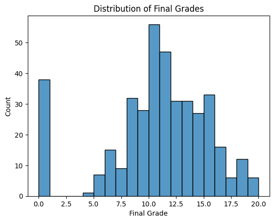
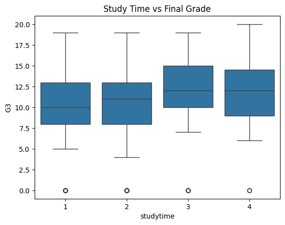
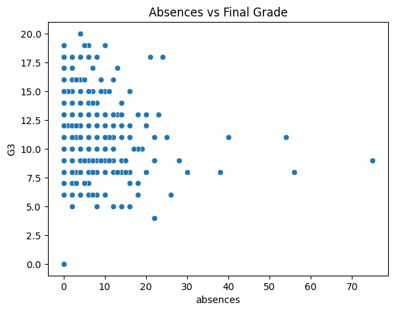
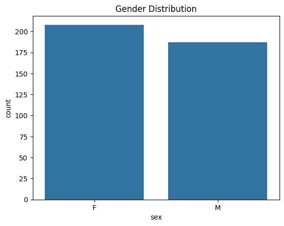
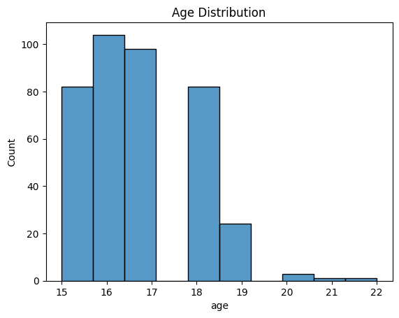
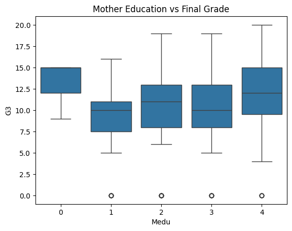
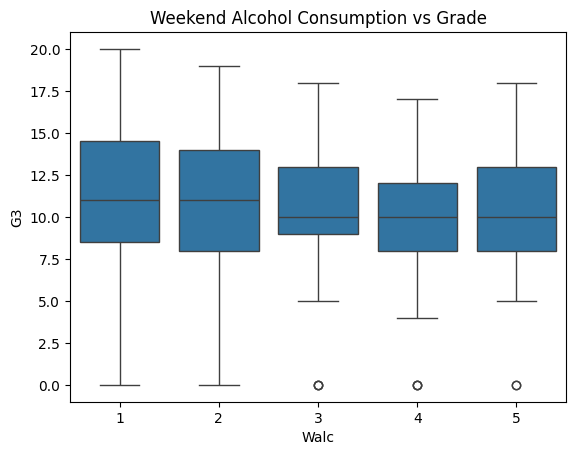
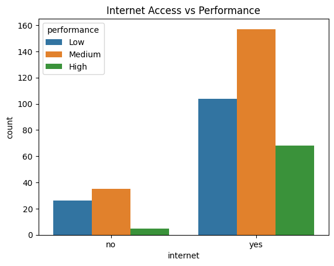
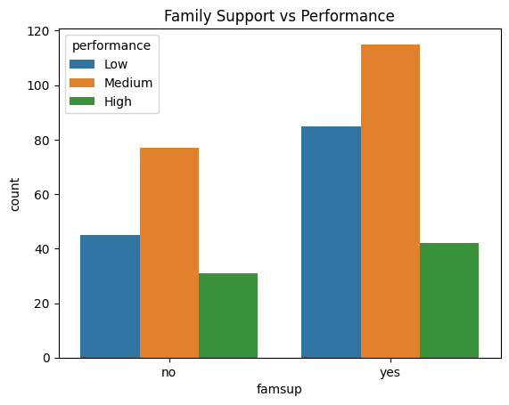

Data Preparation &
Exploratory Analysis
Gathering, cleaning, and visually exploring the student performance dataset before modeling.
Data Source
The primary dataset used in this project is the Student Performance Dataset, obtained from the UCI Machine Learning Repository. The dataset contains academic, demographic, social, and behavioral information for secondary school students enrolled in a mathematics course in Portugal. Each row represents an individual student, and each column represents a specific attribute related to performance or background.
Dataset source: UCI Machine Learning Repository —
File used: student-mat.csv (Math course, 395 students, 33 attributes)
Link to UCI Repository →

API Data Collection
In addition to the primary dataset, external contextual data was collected using the World Bank Open Data API. This API was used to retrieve country-level education and technology indicators (Portugal) to provide broader educational context. These indicators were used for contextual understanding and enrichment — they were not merged at the individual student level.
API: World Bank Open Data — data.worldbank.org
https://api.worldbank.org/v2/country/PRT/indicator/IT.NET.USER.ZS?format=jsonData Cleaning & Preparation
Data cleaning and preparation were performed using Python to ensure the dataset was accurate, consistent, and suitable for exploration and modeling.
Preparation Steps
- Checked for null / missing values — none found ✓
- Checked for duplicate rows — none found ✓
- Verified all data types for correctness
- Reviewed numerical ranges for outliers (e.g., absences 0–93)
- Dropped intermediate grades
G1andG2to avoid data leakage - Created derived performance category from G3 (Low / Medium / High)
- Binary-encoded yes/no columns; One-hot encoded job/reason/guardian columns

Exploratory Data Analysis
Exploratory Data Analysis (EDA) was conducted to understand distributions, relationships, and patterns within the student performance dataset. The following visualizations explore how academic outcomes relate to study habits, attendance, family background, and lifestyle factors.









Code Repository: All data preparation and EDA code is in the main Python notebook. Link to Notebook (EDA & Data Preparation) →